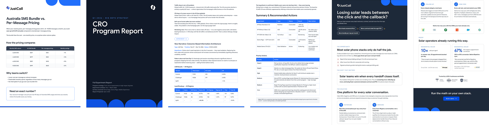
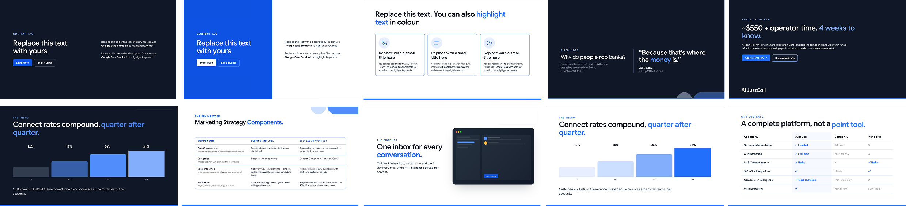
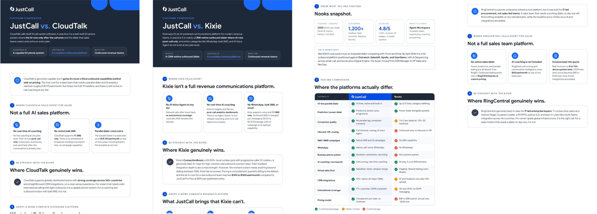
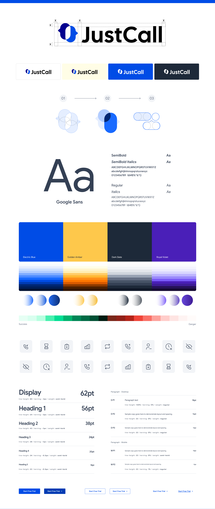

AI workflow
Claude Design System for JustCall
The Problem
More requests. Same design team.
Teams often needed one-pagers, decks, battlecards, and social carousels quickly. But every request, no matter how small, had to go through the design team. Templates helped, but only for layouts that already existed. What was needed was a system that could understand the brand and create new assets from scratch.
Before the system:
- Every asset went through the design queue.
- Old files were reused, causing the brand to drift.
- Designers handled repetitive over creative work.
The Design System
The brand, translated into rules.
I built a design system that captured the visual rules behind the brand, including colour, typography, spacing, iconography, layout, and voice. These rules gave Claude a clear framework to work from, so it could take new content and apply the brand consistently across different formats.
One system, four use cases.
- One-pagers
- Decks
- Carousels
- Battlecards
How It Works
A simple brief in. An on-brand asset out.
Step 1: Input — Plain-English prompt
“Make a one-pager comparing us to Kixie” or “Turn this report into a 6-slide deck.”
Step 2: Design system — Brand rules kick in
Color, type, spacing, and icon rules are applied automatically.
Step 3: Output — On-brand file ready
A finished file, with only a quick design check if needed.
Live Results
One system. Four different outputs.
One-pagers, decks, social carousels and battlecards, all created from the same brand rules.
One-pagers

Decks

Social carousels
Battlecards

Reflection
What worked, and what I’d push further.
What worked:
- One set of rules could work across four very different formats without rebuilding the system for each one.
- Clear guardrails, including what not to do, helped prevent the visual drift that happens when people work from old files.
- Stakeholders could explore directions quickly, while designers could focus their time on review and higher-value work.
What I’d improve:
- Some outputs, especially complex or data-heavy layouts, still need more specific guidance.
- A lightweight review layer would help catch the small percentage of outputs that push the system further.
- The aim is not to remove designers from the process, but to remove the need for them to produce every routine asset from scratch.
Style guide
